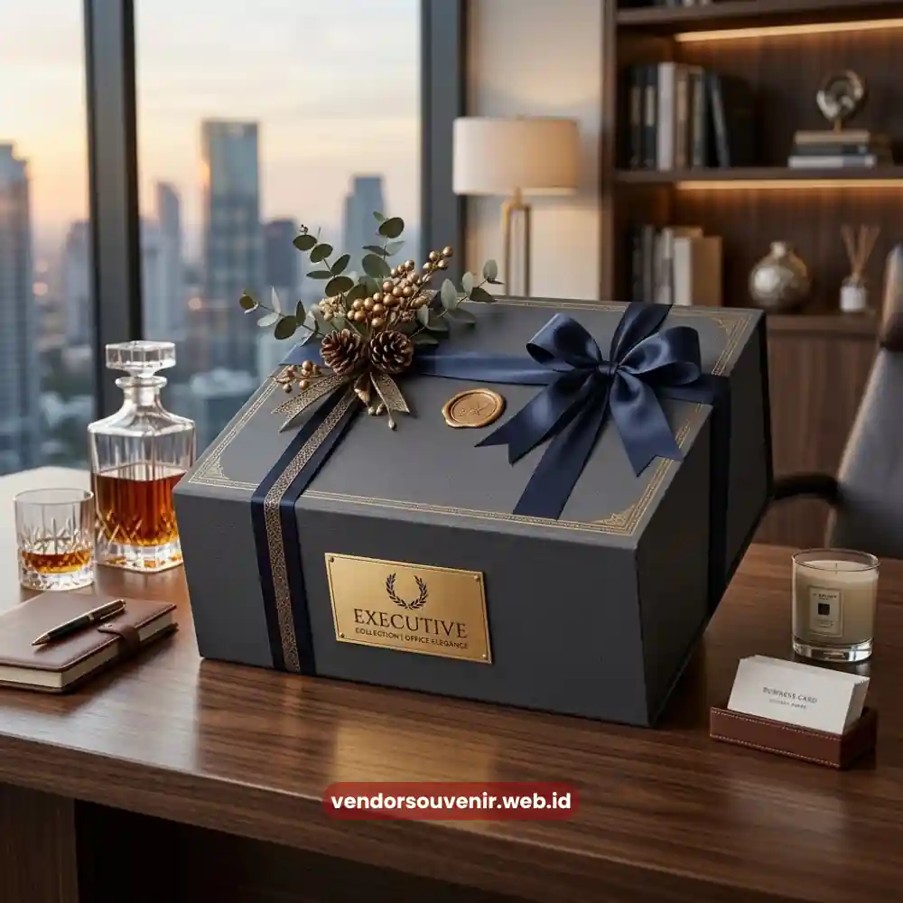
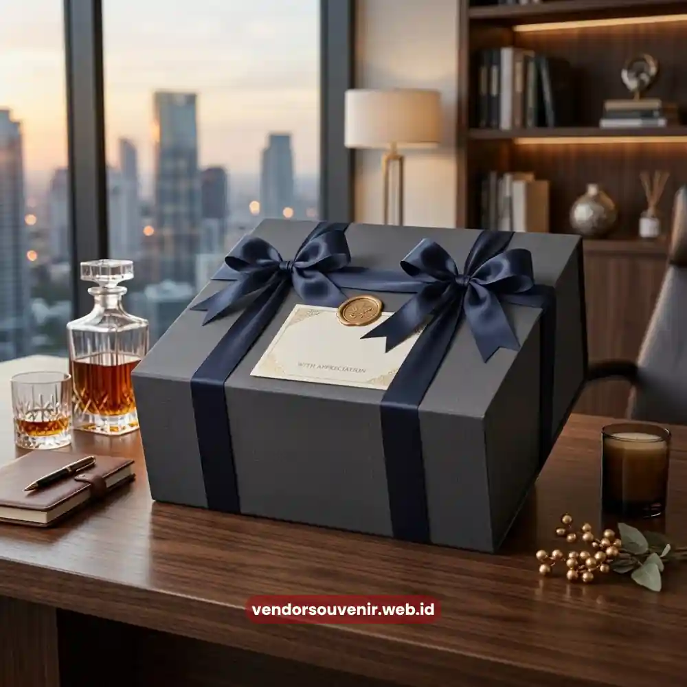

Daftar Isi
Kemasan hampers kantor eksklusif berperan besar dalam membentuk kesan pertama sekaligus memperkuat identitas brand perusahaan di mata klien.
- Kemasan yang rapi dan berkualitas menjadi elemen pertama yang membentuk kesan eksklusif sebuah hampers.
- Warna dan desain kemasan idealnya selaras dengan identitas visual perusahaan pengirim.
- Penambahan logo dan kartu ucapan personal memperkuat efek branding pada penerima.
- Material kemasan premium mencerminkan tingkat keseriusan perusahaan dalam menjaga relasi bisnis.
- Vendor Souvenir menyediakan layanan personalisasi kemasan untuk hampers kantor eksklusif brand Anda.
Detail seperti material kotak, warna kemasan, pita, hingga penempatan logo secara langsung memengaruhi penilaian penerima.
Hal ini menentukan bagaimana penerima menilai keseriusan dan profesionalisme perusahaan pengirim.
Investasi pada kualitas kemasan sama pentingnya dengan isi hampers, karena kesan pertama terbentuk sebelum kotak dibuka.
Mengapa Kemasan Hampers Kantor Eksklusif Penting untuk Branding Perusahaan?
Kemasan menjadi elemen pertama yang dilihat dan dinilai oleh klien sebelum mengetahui isi hampers secara keseluruhan.
Kesan awal yang terbentuk dari tampilan luar hampers sering kali menentukan ekspektasi penerima terhadap kualitas isi di dalamnya.
Dalam konteks bisnis, kemasan yang konsisten dengan identitas visual perusahaan turut membantu memperkuat brand recall.
Klien akan lebih mudah mengaitkan hampers dengan pengirim melalui kombinasi warna, logo, atau gaya desain yang khas.
Elemen Kemasan yang Membuat Hampers Terlihat Premium
Beberapa elemen utama menentukan apakah sebuah kemasan hampers terlihat premium atau justru terkesan biasa saja.
Elemen tersebut meliputi jenis material kotak, detail finishing, serta konsistensi tema visual secara keseluruhan.
Material dan Struktur Kotak
Kotak dengan material tebal dan struktur kokoh memberi kesan tahan lama dan berkualitas tinggi.
Material yang terlalu tipis justru dapat menurunkan persepsi terhadap keseluruhan hampers, meski isinya sebenarnya berkualitas baik.
Warna dan Tema Visual
Pemilihan warna kemasan sebaiknya selaras dengan palet warna identitas perusahaan atau mencerminkan nuansa elegan.
Warna netral seperti hitam, putih gading, atau emas sering dipilih karena memberi kesan mewah yang universal.
Detail Finishing seperti Pita dan Label
Sentuhan akhir seperti pita satin, segel lilin, atau label custom logo menjadi detail kecil yang berdampak besar.
Detail-detail ini menunjukkan bahwa hampers disiapkan dengan cermat, bukan sekadar dikemas seadanya.

Kemasan Hampers Kantor Eksklusif Pita Satin
Bagaimana Personalisasi Kemasan Memperkuat Identitas Perusahaan?
Personalisasi kemasan seperti penambahan logo perusahaan, kartu ucapan khusus, dan warna sesuai brand guideline membuat hampers terasa eksklusif.
Personalisasi ini memberi sinyal bahwa hampers dirancang khusus untuk penerima, bukan produk massal yang dikirim ke banyak pihak.
Penambahan pesan personal yang relevan dengan hubungan kerja sama juga memperkuat kesan bahwa perusahaan benar-benar memperhatikan relasi.
Kesalahan Kemasan yang Sering Menurunkan Kesan Eksklusif
Kesalahan umum dalam kemasan hampers meliputi material terlalu tipis, warna tak konsisten, dan minimnya detail finishing.
Kemasan yang terlalu ramai dengan elemen dekoratif juga dapat terlihat kurang rapi dan tidak profesional.
Konsistensi adalah kunci. Jika satu elemen tidak selaras dengan elemen lainnya, keseluruhan hampers akan terlihat kurang matang.

Solusi Gift Set dari Vendor Terpercaya
Kesimpulan
Kemasan hampers kantor eksklusif bukan sekadar pembungkus, melainkan representasi visual dari citra perusahaan Anda.
Investasi pada detail kemasan yang konsisten akan memberi dampak positif terhadap bagaimana brand Anda diingat oleh relasi bisnis.
Butuh Bantuan Merancang Kemasan Hampers?
Tim ahli kami siap membantu Anda menyusun paket hadiah eksklusif yang menarik.
Pilihan barang akan disesuaikan dengan ketersediaan budget dan kebutuhan Anda.
Seluruh desain kemasan akan kami selaraskan dengan identitas visual perusahaan Anda.
Dapatkan penawaran harga terbaik untuk pesanan massal!
FAQ
Mengapa kemasan hampers kantor eksklusif dianggap sama penting dengan isinya?
Kemasan membentuk kesan pertama sebelum penerima mengetahui isi hampers, sehingga turut menentukan ekspektasi dan persepsi keseluruhan terhadap kualitas hadiah.
Apakah warna kemasan harus selalu mengikuti identitas brand perusahaan?
Sebaiknya iya, karena konsistensi warna membantu memperkuat brand recall, meski warna netral seperti hitam atau emas juga tetap bisa memberi kesan elegan secara umum.
Apakah personalisasi logo pada kemasan hampers memerlukan proses tambahan?
Personalisasi logo umumnya memerlukan waktu produksi tambahan, sehingga sebaiknya dipesan lebih awal agar hasil akhir maksimal dan sesuai jadwal pengiriman yang diinginkan.
Maroon Souvenir
Partner Corporate Gift terpercaya di Indonesia. Berpengalaman melayani ratusan perusahaan sejak 2018.
Lihat Portofolio Kami